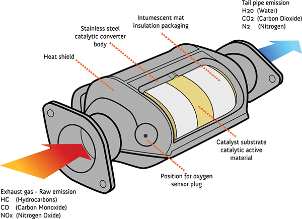
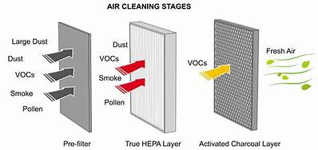

Welcome to our webpage this webpage is about Carbon monoxide
Hello! We have made this webpage to say you something about Carbon monoxide (CO).
As we know that pollution is increasing day by day in pollution there are many harmful gases and
the most harmful gas is Carbon monoxide (CO) to reduce carbon monixide we have made a machine
in this machine we have added air tight container,Hepa filter,High power motor with fan,CNG gas cylinder,
CNG burner and catalytic converter.
Now,About our project
In first our project will suck polluted air with the help of high power motor which is connected with fan.
After that air will go through hepa filter basically hepa stands for high efficiency microscopic air
it a special type of air filter that captures microscopic particles like dust,pollen,mold spars,pet danger,
bactaria,smoke and particulate matter.The true hepa filter captures 99.97% of particles as small as 0.3 microns.
After hepa filter there is one more filter called catalutic converter which will convert carbon monoxide
into carbondioxide inside catalytic converter there is a honey comb like structure which is made up of platinum and
palladium metel called oxydising catalyst.Inside qxidising catalyst a reaction will occur Carbon monoxide+Oxigen=carbondioxide
to work this reaction we need heat in oxydising catalyst for heat we have added CNG burner and CNG cylinder.
The fullform of CNG is compressed natural gas.The work of CNG cylinder and CNG burner is CNG cylinder will give gas
to CNG burner and CNG burner will give out fire and oxydising catalyst will ger heated.AT last we have added onemore hepa filter
which will purify air more and fresh air will come out.Thank you
Catalytic Converter

Hepa filter

Click here
About catalytic converter
Clich here
Hepa filter
Harmful things about Carbon monoxide:
Carbon monoxide can result in brain damage, heart problems, major organ dysfunction, memory or cognitive problems, behavioural and personality changes and a range of other permanent problems.
This webpage is made by Adhrit Narayanan KC
This machine is made by Adhrit narayanan KC and Janit Agarwal
If any doubt contact us at dkc24478@gmail.com